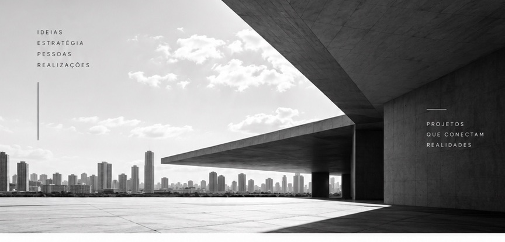

Desde 2012
Quem
Somos
Desde 2012, a CRL Gestão e Consultoria atua na estruturação, desenvolvimento e realização de projetos, apoiando organizações diante de desafios que exigem estratégia, planejamento, articulação e capacidade de execução.
Partimos de uma visão ampla de cada demanda. Entendemos o contexto, organizamos possibilidades, estruturamos caminhos e construímos as condições necessárias para transformar uma ideia em um projeto consistente e viável.
Ao longo dessa trajetória, ampliamos nossa atuação para diferentes frentes da gestão, da estratégia, das relações institucionais e da inteligência, sempre preservando uma característica central da CRL: pensar para fazer acontecer.